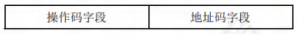
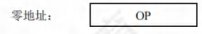
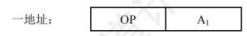
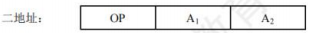
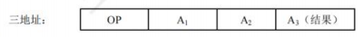
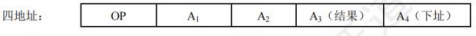
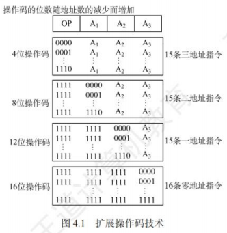

指令系统
[toc]
指令集体系结构
机器指令（简称指令）是指示计算机执行某种操作的命令。一台计算机的所有指令的集合构成该机的指令系统，也称指令集。
指令系统是指令集体系结构(ISA)中最核心的部分，ISA完整定义了软件和硬件之间的接口，是机器语言或汇编语言程序员所应熟悉的。
-
ISA规定的内容主要包括:
- 指令格式，指令寻址方式，操作类型，以及每种操作对应的操作数的相应规定。
- 操作数的类型，操作数寻址方式，以及是按大端方式还是按小端方式存放。
- 程序可访问的寄存器编号、个数和位数，存储空间的大小和编址方式。
- 指令执行过程的控制方式等，包括程序计数器、条件码定义等。
-
ISA规定了机器级程序的格式，机器语言或汇编语言程序员必须对机器的ISA非常熟悉。
- 不过，大多数程序员不会用汇编语言或机器语言编写程序，通常用高级语言（如C/C++/Java）编写程序，这样开发效率更高，也不易出错。
- 但是，高级语言抽象层太高，隐藏了许多机器级程序的细节，使得高级语言程序员不能很好地利用与机器结构相关的一些优化方法来提升程序的性能。
- 若程序员对ISA和底层硬件实现细节有充分的了解，则可以更好地编制高性能程序。
指令的基本格式

-
一条指令就是机器语言的一个语句，它是一组有意义的二进制代码。一条指令通常包括操作码字段和地址码字段两部分
-
操作码指出该指令应执行什么操作以及具有何种功能。
- 操作码是识别指令、了解指令功能及区分操作数地址内容等的关键信息。
- 例如，指出是算术加运算还是算术减运算，是程序转移还是返回操作。
-
地址码给出被操作的信息(指令或数据)的地址
- 包括参加运算的一个或多个操作数的地址、运算结果的保存地址、程序的转移地址、被调用子程序的入口地址等。
-
指令字长是指一条指令所包含的二进制代码的位数
- 其取决于操作码的长度、地址码的长度和地址码的个数。
- 指令字长与机器字长没有固定的关系，它既可以等于机器字长，又可以大于或小于机器字长。
- 通常，把指令长度等于机器字长的指令称为单字长指令，指令长度等于半个机器字长的指令称为半字长指令，指令长度等于两个机器字长的指令称为双字长指令。
-
在一个指令系统中
- 若所有指令的长度都是相等的，则称为定长指令字结构，定字长指令的执行速度快，控制简单。
- 若各种指令的长度随指令功能而异，则称为变长指令字结构。
- 然而，因为主存一般是按字节编址的，所以指令字长通常为字节的整数倍。
-
根据指令中操作数地址码的数目的不同，可将指令分成：零地址指令，一地址指令，二地址指令，三地址指令，四地址指令。
零地址指令

-
只给出操作码OP，没有显式地址。这种指令有两种可能:
- 不需要操作数的指令，如空操作指令、停机指令、关中断指令等。
- 零地址的运算类指令仅用在堆栈计算机中。通常参与运算的两个操作数隐含地从栈顶和次栈顶弹出，送到运算器进行运算，运算结果再隐含地压入堆栈。
一地址指令

-
这种指令也有两种常见的形态，要根据操作码的含义确定究竟是哪一种。
- 只有目的操作数的单操作数指令，按A地址读取操作数，进行OP操作后，结果存回原地址。
-
指令含义：OP(A1)→A
-
如操作码含义是加1、减1、求反、求补、移位等。
- 隐含约定目的地址的双操作数指令，按指令地址A，可读取原操作数，指令可隐含约定另一个操作数由ACC(累加器)提供，运算结果也将存放在ACC中。
- 指令含义：(ACC)OP(A1)→ACC
-
若指令字长为32位，操作码占8位，1个地址码字段占24位，则指令操作数的直接寻址范围为。若地址码字段均为主存地址，则完成一条一地址指令需要3次访存（取指令1次，取操作数1次，存结果1次）。
二地址指令

- 指令含义：(A1)OP(A2)→A1
- 对于常用的算术和逻辑运算指令，往往要求使用两个操作数，需分别给出目的操作数和源操作数的地址，其中目的操作数地址还用于保存本次的运算结果。
- 若指令字长为32位，操作码占8位，两个地址码字段各占12位，则每个操作数的直接寻址范围为。若地址码字段均为主存地址，则完成一条二地址指令需要4次访存（取指令1次，取两个操作数2次，存结果1次）。
三地址指令

- 指令含义：(A1)OP(A2)→A3。
- 若指令字长为32位，操作码占8位，3个地址码字段各占8位，则每个操作数的直接寻址范围为。若地址码字段均为主存地址，则完成一条三地址指令需要4次访问存储器（取指令1次，取两个操作数2次，存结果1次）。
四地址指令

- 指令含义：(A1)OP(A2)→A3，A4=下一条将要执行指令的地址
- 若指令字长为32位，操作码占8位，4个地址码字段各占6位，则每个操作数的直接寻址范围为。若地址码字段均为主存地址，则完成一条四地址指令需要4次访存（取指令1次，取两个操作数2次，存结果1次）。
定长操作码指令格式
-
定长操作码指令在指令字的最高位部分分配固定的若干位（定长）表示操作码。
-
一般n位操作码字段的指令系统最大能够表示条指令。
-
定长操作码对于简化计算机硬件设计，提高指令译码和识别速度很有利。当计算机字长为32位或更长时，这是常规用法。
-
扩展操作码指令格式
- 为了在指令字长有限的前提下仍保持比较丰富的指令种类，可采取可变长度操作码，即全部指令的操作码字段的位数不固定，且分散地放在指令字的不同位置上。
- 这将增加指令译码和分析的难度，使控制器的设计复杂化。
- 最常见的变长操作码方法是扩展操作码，它使操作码的长度随地址码的减少而增加，不同地址数的指令可具有不同长度的操作码，从而在满足需要的前提下，有效地缩短指令字长。
- 图4.1所示即为一种扩展操作码的安排方式。

-
在图4.1中，指令字长为16位，其中4位为基本操作码字段OP，另有3个4位长的地址字段A1、A2和A3。
- 4位基本操作码若全部用于三地址指令，则有16条。图4.1中所示的三地址指令为15条，留作扩展操作码之用；
- 二地址指令为15条，留作扩展操作码之用；
- 一地址指令为15条，留作扩展操作码之用；
- 零地址指令为16条。
- 除这种安排外，还有其他多种扩展方法，如形成15条三地址指令、12条二地址指令、63条一地址指令和16条零地址指令，共106条指令。
-
在设计扩展操作码指令格式时，必须注意以下两点:
- 不允许短码是长码的前缀，即短操作码不能与长操作码的前面部分的代码相同。
- 各指令的操作码一定不能重复。
-
通常情况下，对使用频率较高的指令分配较短的操作码，对使用频率较低的指令分配较长的操作码，从而尽可能减少指令译码和分析的时间。
指令的操作类型
设计指令系统时必须考虑应提供哪些操作类型，指令操作类型按功能可分为以下几种。
数据传送
传送指令通常有寄存器之间的传送(MOV)、从内存单元读取数据到CPU寄存器(LOAD)、从CPU寄存器写数据到内存单元(STORE)、进栈操作(PUSH)、出栈操作(POP)等。
算术和逻辑运算
这类指令主要有加(ADD)、减(SUB)、乘(MUL)、除(DIV)、加1(INC)、减1(DEC)、与(AND)、或(OR)、取反(NOT)、异或(XOR)等。
移位操作
移位指令主要有算术移位、逻辑移位、循环移位等。
转移操作
转移指令主要有无条件转移(JMP)、条件转移(BRANCH1)、调用(CALL)、返回(RET)、陷阱(TRAP)等。
无条件转移指令在任何情况下都执行转移操作，而条件转移指令仅在特定条件满足时才执行转移操作，转移条件一般是某个标志位的值，或几个标志位的组合。
调用指令和转移指令的区别：执行调用指令时必须保存下一条指令的地址(返回地址)，当子程序执行结束时，根据返回地址返回到主程序继续执行；而转移指令则不返回执行。
输入输出操作
这类指令用于完成CPU与外部设备交换数据或传送控制命令及状态信息。